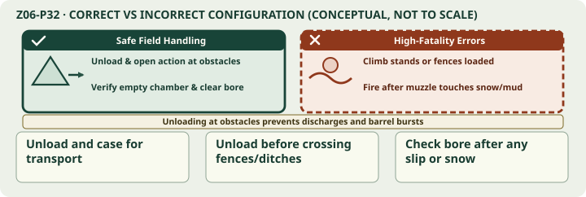

Z06-P32 · Hunting and fishing · New manuscript
Safe Firearm Transport, Unloaded Crossings and Barrel Checks
Prevent negligent discharges and barrel-obstruction ruptures during vehicle transport, fence crossings, and muddy/snowy travel.
When it applies · Moving firearms between vehicles, boats, camps, and field terrain.
Equipment · Cased/locked transport compliant with state law, cleaning rod/pull-through, chamber flag.

Actions
- Unload firearms completely and visually and physically verify an empty chamber and magazine before casing for vehicle or boat transport per Minnesota transport law.[H02, H03]
- Unload completely and open the action before climbing treestands, crossing fences, stepping over slippery logs, or passing a firearm to another person.[H03]
- Unload and inspect the bore from the breech end immediately after any stumble, muzzle dip in snow/mud, or heavy brush push because a plugged barrel can burst catastrophically.[H03]
Failure recognition · Carrying a chambered firearm over a wet log or firing with snow packed inside the muzzle causes fatal self-inflicted wounds or barrel rupture.[H03]
Verify · Chamber is visually and physically verified empty during transport/crossings, and bore is clear after any fall or snow contact.[H03]
Stop or change course · Stop and safely unload immediately if snow, mud, ice, or mismatched ammunition is suspected in any firearm.[H03]
Evidence and editorial notes
- H02 · Minnesota DNR · Minnesota Hunting and Trapping Regulations (Current web edition)
- Section: Hunting licenses, zones, seasons, and legal methods · Conditions: Minnesota big game, small game, and bird hunting
Support: Hunters must verify current license, permit-area, season, legal-hours, blaze-clothing, and method rules with the governing authority prior to afield activity.
Limitations: Private-land trespass law, municipal ordinances, and tribal jurisdiction apply separately; emergencies do not suspend wildlife law. · Conflicting evidence: None noted.
Editorial note: Establishes Z06 hunting authority gate. · Specialist reviewer: Minnesota DNR wildlife law reviewer
Primary source · checked 2026-11-25
Current assessment · A04-H02 (2026-11-25) · Bounded support confirmed (A04): DNR publishes the applicable checks and updates. No season date, license decision or exception is approved by this record. Limits: Specialist review PENDING (Minnesota DNR wildlife law reviewer); publication HOLD. All release decisions pending. - H03 · Minnesota DNR · Firearms Safety Certification and Hunter Education (Current web edition)
- Section: Four fundamental firearm safety rules and certification · Conditions: Any firearm handling, transport, or field carry
Support: Treat every firearm as loaded, keep the muzzle in a safe direction, keep finger off the trigger until ready to shoot, and verify target and what is beyond it.
Limitations: Certification is required by age/statute in Minnesota; written summaries never substitute for formal certified safety instruction. · Conflicting evidence: None noted.
Editorial note: Mandatory Z06 bounded weapon-safety gate. · Specialist reviewer: Certified hunter-education and firearm safety instructor
Primary source · checked 2026-11-25
Current assessment · A04-H03 (2026-11-25) · Bounded support confirmed from an alternate source (A04): Basic safe handling principles only. No firing instruction, exercise or equipment qualification. Limits: Specialist review PENDING (Certified hunter-education and firearm safety instructor); publication HOLD. All release decisions pending.
Source lineage · New manuscript (Z06 P17 equipment safety) · Classification · New manuscript.